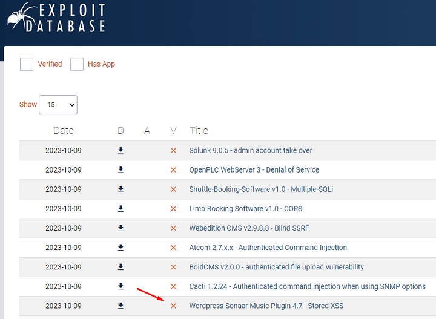
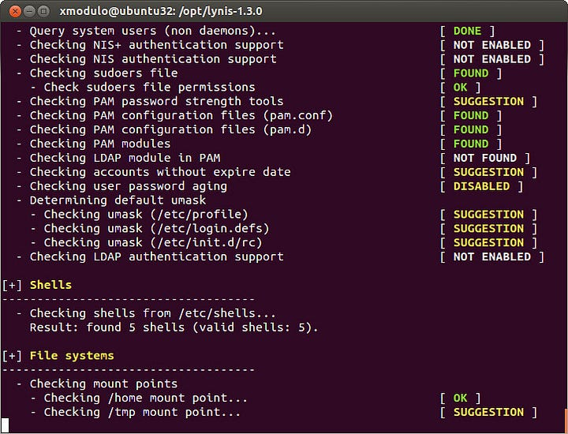
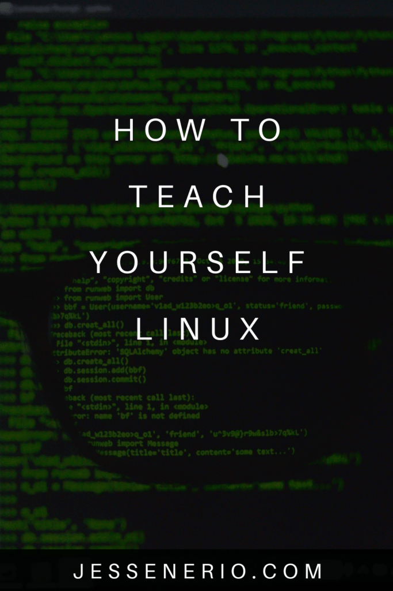

Linux, or Unix systems, are an essential tool to all technology. It is the original cross-platform operating system which made software cross-compatible with hardware. Its cross-platform capability inspired the idea of a universal operating system for personal computers, like Windows.
Many of the properties and design of Unix and Unix-like systems became required parts of future systems. Today, the go-to operating system for any kind of remote host is its child OS (Operating System), Linux.
Cloud systems, distributed computing & virtual machines all require a low resource, highly versatile operating system which accepts multiple users and is highly compatible with most development software. If you were to ask which fits this bill better, Windows or Linux, most developers would say Linux.
Start with Command-Line-Interface
To get better at this operating system I recommend always prioritizing learning terminal commands. If you work on Mac or Windows and have never used a pure terminal based Unix-like operating system, many misconceptions about personal computing will have to change.
Windows & Mac have added many properties to files, executables, screens and many more features which were designed to cater to someone first learning a computer. For this reason you should start with the CLI (Command-Line-Interface).
CLI will help you learn the original way operating systems were made with greater ease. It is sort of, a requirement, to be able to understand Unix concepts such as folders being files and executables being irrespective of file extensions.
In addition, Linux was built to be a terminal-first OS and thus managing the system or server is much much faster without the GUI, if the skill is sufficient.
Taking a Monolithic Course
If you are a beginner, the best way to progress is with a course. You can default all your learning needs this way and use whatever Linux system the course uses; WSL, a virtual machine or a dual-boot system are options.
A course I recommend is this one, though if you find a better one that is good too. Don't forget to take notes:
Introduction to Linux - Full Course for Beginners
Develop & Deploy Software In Linux
As every activity requires its own practice. Developing software on Linux gives a unique set of skills their expertise, which is valuable in all fields from systems design to cloud and security.
For example, developing a Python rest API, then deploying it on a remote computer, all on Linux, will typically enforce skills you can't learn with any other type of activity.
The basic idea will be to create websites, video game servers (like Minecraft, 7 Days To Die, etc.) and tools on Linux...
This activity is a typical way to progress. Many people simply do this and gain the skills they need. Also, often, developers use a GUI for the operating system to run their code environment. Though this is very good to do, I would recommend still prioritizing the terminal.
A Typical Method For Improving Security And Linux Skills For Intermediates & Advanced Users
If you want to just run apps, edit server code and be cool on Linux, doing just that will serve that purpose. But, if you can get the operating system running and understand how to install packages, manage basic networking & even know a little Python then ethical hacking is an amazing way to learn unique Linux skills and general security.
Ethical hacking pushes the very limits of your knowledge and involves all practices of Linux systems. To hack other Linux boxes (computers) you literally have to learn Linux inside and out to progressively understand more and more of its vulnerabilities.
Penetration testing (ethical hacking) gives a peel into the hidden world of expert software and hardware intruders. You really don't realize how vulnerable you are until you start learning how to hack. All those security prompts you passed up, all those warnings in your console for that code environment, they actually mean something.
It is much like joining an MMA boxing club. You enter, you spar for the first time, and you realize something. You are vulnerable, like 100% of the time. Without knowing how to fight, anybody with just a little bit of skill can take you down, it is a scary thought.
What Learning Linux Security Looks Like
Ethical hacking is very akin to banging your head against the wall until your head becomes so hard it starts slamming through thicker and thicker walls. Eventually you understand the systems so well, it seems you can do anything on it.
You start by learning how to brute force a weak SSH service, or place a backdoor using a weak FTP, gain root permissions with some networking scripts and eventually come to use present known exploits.
It is freaking cool. The picture below is essentially a public exploit database to hack into computers. Take a look:
Screenshot of exploit-db.com
This is completely illegal to use to hack other people, but it is public domain. In addition, companies and groups pay people to cover exploits and create exploits, which is the basic practice of cybersecurity experts.
The dark web has more sinister exploit lists which are much worse than this and even require a fee to see...
To be able to use these exploits, and here is where the most learning of Linux comes from, you use scanning tools to give full reports of what can be seen in the computer you are trying to hack.
Here is an example:
Vulnerability Scanner photo by Xmodulo on Flickr
These vulnerability scans show a very detailed snapshot of all the potential exploits available in the machine. As an ethical hacker, growing your knowledge and mastering operating systems is the way to become a penetration testing expert.
How to practice ethical hacking
To truly learn Linux, security is not entirely optional. Some level of security expertise has to be learned. For this, I recommend two things, learning pen testing theory & practicing ethical hacking with something like Hack The Box or Vulnhub.
For the theory, the typical idea is to go through either a Udemy course or a pen testing course like this one:
Full Ethical Hacking Course - Network Penetration Testing
In addition, some Computer Networking courses would be good too. The idea is to learn the ins and outs of pen-testing/hacking and learn to break through other computers.
Essentially, doing will improve general security knowledge online.
You Can Make A Choice
People prefer different ways to learn Linux. Some enjoy a pure software development approach and others a pure ethical hacking approach. Others practice a bit of both or lean on one more than the other.
Pick what you like, enjoy what you like, but these are some potential options to try...
Anywho, I hope you learned something...
Happy coding!
Resources
Ethical hacking: http://wiki.cas.mcmaster.ca/index.php/Ethical_Hacking
Exploit DB: https://www.exploit-db.com/
Hack The Box: https://www.hackthebox.com/
